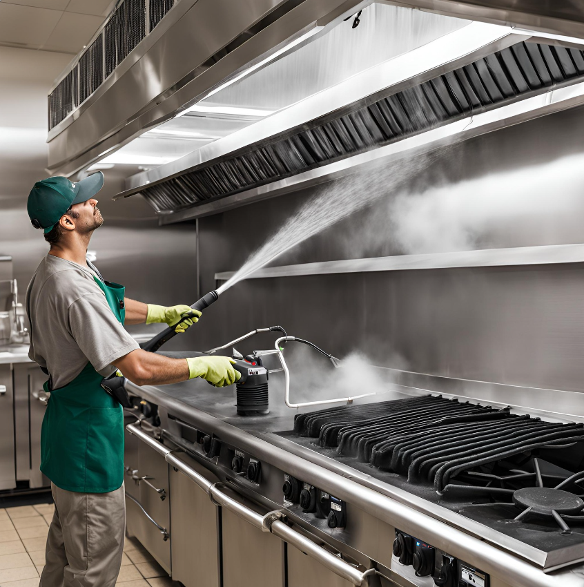
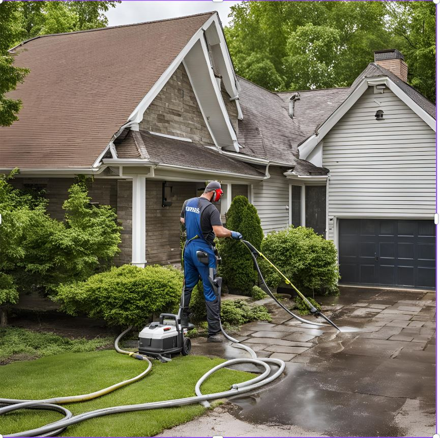

Maintaining the exterior of a home improves its curb appeal and protects it from long-term damage caused by dirt, mold, mildew, and other contaminants. We offer thorough cleaning services for:

Our professional pressure washing services help businesses maintain a clean, safe, and professional appearance. Regular cleaning reduces liabilities, improves aesthetics, and extends the life of building materials. Our commercial services include:

Protection Pressure washing removes contaminants, preventing moisture retention that can lead to corrosion and rust. By keeping the surfaces clean, the equipment's protective coatings (like paint and sealants) remain intact, which further guards against oxidation and prolongs the life of the equipment.